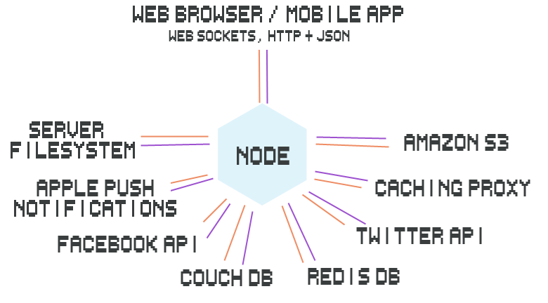

What we gonna talk today ?
And what you should know ?
Let's get started !!
Few thing to remember
Javascript Engines
Running JS outside the browser
built on top of V8 Engine
Non-Blocking I/O
Understanding Node.js
Node.js is an open source project designed to help you write JavaScript programs that talk to
networks
file systems
other I/O (input/output, reading/writing) sources.
When to use node?
Node is great for streaming or event-based real-time applications like
Chat Applications
Real time applicaitons and collaborative Environments
Game servers
Ad Servers
Streaming Servers
Useful for I/O based programs that need to be fast and/or handle lots of connections
Node is great when you need high levels of concurrency but little dedicated CPU time
The Big Picture
can act as the broker between all of the different I/O endpoints
Installation & Documentation
https://nodejs.org/en/
Event Loop
Core Modules (node core)
public API that you are intended to write programs with.
file systems there is the fs module
for networks there are modules like net (TCP), http, dgram (UDP).
Blocking I/O
var fs = require('fs');
var contents = fs.readFileSync('package.json').toString();
console.log(contents);
what if the file being read in huge?
Non - Blocking I/O
var fs = require('fs');
fs.readFile('package.json',function(err,buffer){
console.log(buffer.toString());
});
Callbacks
Callbacks are functions that are executed asynchronously, or at a later time.
Promises
A function will return a promise for a object in the future
Promises can be chained together
Simplify programming of async systems
Event Driven Programming
a programming paradigm in which the flow of the program is determined by events such as user actions (mouse click, key press) or messages from other programs.
Events
callbacks are a one-to-one relationship between the thing waiting for the callback and the thing calling the callback
events are the same exact pattern except with a many-to-many API
Common use cases for events
- Chat room where you want to broadcast messages to many listeners
- Game server that needs to know when new players connect, disconnect, move, shoot and jump
- Game engine where you want to let game developers subscribe to events like .on('jump', function() {})
var chatClient = require('my-chat-client').connect()
chatClient.on('connect', function() {
// have the UI show we are connected
})
chatClient.on('connectionError', function() {
// show error to the user
})
chatClient.on('disconnect', function() {
// tell user that they have been disconnected
})
chatClient.on('message', function() {
// show the chat room message in the UI
})
Modules
Node core is supposed to be small, and the modules in core should be focused on providing tools for working with common I/O protocols and formats in a way that is cross-platform.
For everything else there is npm.
What is NPM?
Official package manager for Node.
Bundled and installed automatically with the environment
npm install package_name --save
What is a package.json?
{
"name": "Appname",
"version": "0.1.0",
"description": "Application description",
"main": "index.html",
"author": "Kunal Mathur",
"license": "ISC",
"devDependencies": {
"grunt": "^0.4.5"
}
}
Semantic Versioning
"grunt": "^x.y.z"
PATCH version(Z) - when you make backwards-compatible bug fixes.
MINOR version(Y) - when you add functionality in a backwards-compatible manner
MAJOR version (X) - when you make incompatible API changes
How does it work?
Reads package.json
installs dependencies in the local node_modules folder
Can specify dev or optional dependencies.
How require works
When you call require('some_module') in node here is what happens:
- if a file called some_module.js exists in the current folder node will load that, otherwise:
- node looks in the current folder for a node_modules folder with a some_module folder in it
- if it doesn't find it, it will go up one folder and repeat step 2
Popular Modules
- Express
- Grunt
- Gulp
- Moongoose
- Jade
- CSURF
Express
Express is a minimal, open source and flexible node.js web app framework designed to make developing websites, web apps, and APIs much easier.
Why use Express?
Express helps you respond to requests with route support so that you may write responses to specific URLs
Supports multiple templating engines to simplify generating HTML
Creating a simple REST API
Explanation of Routes
A router maps HTTP requests to a callback
HTTP requests can be sent at GET/POST/PUT/DELETE etc.
URLs describe the location targeted
helps you map a HTTP GET request like http://localhost:8888/index
to a request handler (callback)
app.get('/index',function(req,res){});
Creating a simple Express Application
var express = require('express');
var app = express();
app.get('/',function(req,res){
res.json({message:'welcome to our API!'});
});
app.listen(process.env.PORT || 8080);